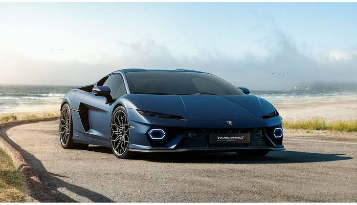

Les voitures
Découvrez quelques voitures grâce à ce diaporama. Utilisez les flèches pour passer d'une photo à l'autre.

1 / 5
Les grands champions automobiles
L'histoire automobile est marquée par des pilotes exceptionnels qui ont repoussé les limites de la vitesse et de la performance. Voici quelques-uns des plus grands noms de la compétition.
| Pilote | Discipline | Palmarès ou particularité |
|---|---|---|
| Michael Schumacher | Formule 1 | Septuple champion du monde |
| Lewis Hamilton | Formule 1 | Septuple champion du monde |
| Ayrton Senna | Formule 1 | Trois titres mondiaux |
| Juan Manuel Fangio | Formule 1 | Cinq titres mondiaux |
| Max Verstappen | Formule 1 | Multiple champion du monde |
| Sébastien Loeb | Rallye | Neuf titres mondiaux |
| Sébastien Ogier | Rallye | Multiple champion du monde |
| Alain Prost | Formule 1 | Quatre titres mondiaux |
L'histoire de l'automobile
Les débuts de l'automobile
L'histoire de l'automobile commence bien avant l'apparition des voitures modernes. Pendant des siècles, les hommes se déplacent principalement à pied, à cheval ou grâce aux calèches tirées par des animaux. Au XVIIIe siècle, certains inventeurs commencent à imaginer des véhicules capables de se déplacer sans chevaux. En 1769, l'ingénieur français Nicolas-Joseph Cugnot construit un véhicule à vapeur destiné à transporter de lourdes charges. Même s'il est très lent et difficile à diriger, cette invention représente une étape importante dans l'histoire des transports.
L'invention du moteur à essence
Au XIXe siècle, les progrès techniques permettent de développer des moteurs plus petits et plus efficaces. Le moteur à combustion interne transforme l'énergie produite par la combustion d'un carburant en mouvement mécanique. En 1885 et 1886, l'ingénieur allemand Carl Benz développe et fait breveter un véhicule à trois roues équipé d'un moteur à essence. À la même époque, Gottlieb Daimler et Wilhelm Maybach travaillent eux aussi sur des moteurs et des véhicules motorisés. Ces inventions contribuent à la naissance de l'automobile moderne.
Le développement des voitures au début du XXe siècle
Au début du XXe siècle, les automobiles deviennent progressivement plus pratiques et plus accessibles. Les premiers modèles restent chers et sont surtout réservés aux personnes fortunées. Aux États-Unis, Henry Ford transforme l'industrie grâce au développement de la production en série. La Ford Model T, commercialisée à partir de 1908, est fabriquée en grande quantité. L'utilisation de méthodes de production plus efficaces permet de réduire son prix et de rendre la voiture accessible à davantage de familles. Peu à peu, les routes se développent et l'automobile prend une place de plus en plus importante dans la vie quotidienne.
Les voitures entre les années 1920 et 1950
Entre les années 1920 et 1950, les constructeurs améliorent la forme, le confort et les performances de leurs voitures. Les carrosseries deviennent plus élégantes et les moteurs gagnent en puissance. Après la Seconde Guerre mondiale, l'industrie automobile connaît un nouvel essor. En Europe, de nombreux constructeurs proposent des voitures compactes et économiques, adaptées aux besoins des familles. La Citroën 2CV, présentée en 1948, devient notamment un symbole de la voiture populaire française. À cette époque, l'automobile représente aussi un signe de liberté et de progrès.
Les années 1950 à 1980 : puissance et design
À partir des années 1950, les voitures se diversifient. Certains constructeurs privilégient le confort et l'élégance, tandis que d'autres recherchent avant tout la vitesse et les performances. Les voitures de sport deviennent très populaires, avec des modèles célèbres de Ferrari, Porsche et Lamborghini. Les progrès de la mécanique permettent d'améliorer les moteurs, les freins et la tenue de route. Cependant, les accidents et la consommation de carburant deviennent aussi des préoccupations importantes. Les fabricants commencent progressivement à renforcer la sécurité des passagers.
La naissance et le développement de la compétition automobile
La compétition automobile accompagne l'évolution de la voiture depuis ses débuts. Les courses permettent aux constructeurs et aux ingénieurs de tester les capacités de leurs véhicules. La Formule 1 organise son premier championnat du monde des pilotes en 1950. Cette discipline devient l'une des compétitions automobiles les plus célèbres au monde. Des pilotes comme Juan Manuel Fangio, Jim Clark, Niki Lauda, Alain Prost, Ayrton Senna, Michael Schumacher et Lewis Hamilton marquent son histoire. Le rallye possède également ses grandes légendes, notamment Sébastien Loeb et Sébastien Ogier. Les courses contribuent au développement de technologies qui peuvent ensuite être adaptées aux voitures de série.
La sécurité et les nouvelles technologies
À partir de la seconde moitié du XXe siècle, la sécurité devient un objectif majeur. Les ceintures de sécurité se généralisent, les structures des voitures sont renforcées et les airbags apparaissent progressivement. Plus tard, les systèmes de freinage antiblocage, le contrôle électronique de stabilité et les aides à la conduite améliorent la protection des automobilistes. Les ordinateurs et les capteurs prennent une place croissante dans les véhicules. Aujourd'hui, certaines voitures peuvent aider le conducteur à maintenir sa trajectoire, à respecter une distance de sécurité ou à effectuer un freinage d'urgence.
Les années 2000 : l'arrivée de l'électronique
Au début du XXIe siècle, l'électronique transforme profondément l'automobile. Les systèmes de navigation par satellite, les écrans de bord, les caméras de recul et les connexions avec les téléphones deviennent de plus en plus courants. Les constructeurs cherchent également à réduire la consommation de carburant et les émissions polluantes. Les moteurs hybrides associent un moteur thermique à un moteur électrique afin d'améliorer l'efficacité énergétique. Cette période marque une transition importante vers des véhicules plus intelligents et plus économes.
La révolution des voitures électriques
Depuis les années 2010, les voitures électriques connaissent un développement rapide. Elles fonctionnent grâce à un moteur électrique alimenté par une batterie rechargeable. Elles ne produisent pas de gaz d'échappement lorsqu'elles roulent, même si leur impact environnemental dépend notamment de la fabrication de la batterie et de la production de l'électricité utilisée. Des marques historiques et de nouveaux constructeurs investissent dans cette technologie. Les progrès des batteries permettent d'améliorer progressivement l'autonomie et les temps de recharge. Le développement des bornes de recharge constitue également un enjeu important pour faciliter leur utilisation.
L'automobile aujourd'hui et demain
Aujourd'hui, l'industrie automobile doit répondre à plusieurs défis : réduire les émissions de gaz à effet de serre, améliorer la sécurité, limiter la consommation de ressources et proposer des véhicules adaptés aux besoins des conducteurs. Les voitures deviennent de plus en plus connectées et utilisent des logiciels pour gérer certaines fonctions. Les ingénieurs travaillent aussi sur des systèmes de conduite automatisée, qui peuvent assister le conducteur dans certaines situations. Toutefois, la conduite entièrement autonome reste un défi technique et réglementaire.
L'avenir de l'automobile dépendra des progrès scientifiques, des choix des constructeurs et de l'évolution des habitudes de déplacement. Les voitures électriques, les véhicules hybrides, les nouveaux matériaux et les systèmes de sécurité continueront probablement à transformer le secteur. Depuis les premiers véhicules à vapeur jusqu'aux voitures connectées, l'histoire de l'automobile illustre plus de deux siècles d'inventions, de compétitions et de changements dans la société. (texte généré par ia)